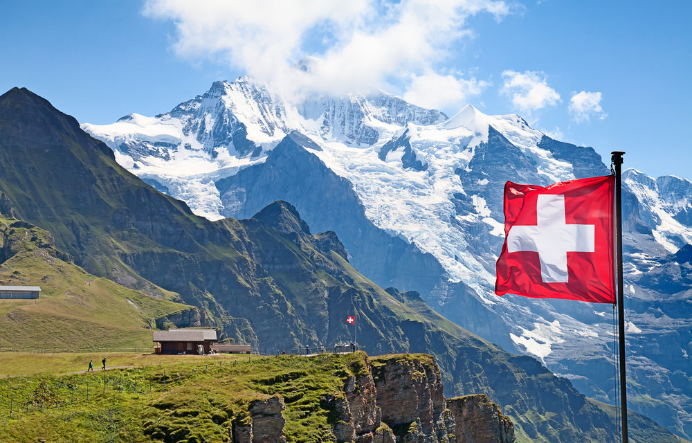
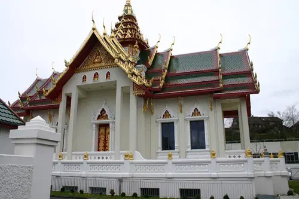

Significado de la bandera: La cruz de plata de la bandera suiza es una representación del soldado que luchó con el Imperio Romano Germánico y recibió la cruz. La bandera también fue influenciada por el estandarte del cantón de Schwyz. Basilea, Berna, Ginebra y Zúrich son las cuatro capitales del país. Suiza tiene 139 ciudades en total, un aumento de 24 desde 1995. Lucerna, Zúrich, Lugano, Ginebra, Basilea, Bellinzona, Berna y Friburgo son los destinos más populares.
Religion:Cristianos de rito oriental (9 %), ateos (5 %), protestantes (67 %), ateos (13 %), católicos romanos (2 %), musulmanes (2 %), ortodoxos (1 %) y budistas ( 1%).-
Politica: El presidente y vicepresidente actuales (a partir de 2023) son Alain Berset y Viola Amherd, respectivamente. El ejecutivo suizo es uno de los gobiernos más estables a nivel mundial. Desde 1848, nunca se ha renovado por completo al mismo tiempo, proporcionando una continuidad a largo plazo
Cultura: Reglas que no son comunes: No puedes arruinar la vida de tu hijo con un nombre ridículo,No se puede tirar de la cadena después de las 10 pm.,Tienes que pagar un impuesto por tu perro,Debes tener un compañero para tus mascotas.El Böögg. El Böögg, o el hombre del saco, es una criatura mítica que en el pasado era utilizada por los adultos para aterrorizar a los niños para que se comporten bien. Otras criaturas son Barbegazi y dragones
10 Cidades mas visitadas:
Berna
Lucerne
Lake geneva
Lugano
Jungfrau Region
Zermatt
Zurich
Geneva
Lausanne
Interlake
Platos típicos
Fondue de queso
Rosti
raclette
Muesli de Bircher


`
El templo budista más grande de Suiza. Por Miriam Martí .